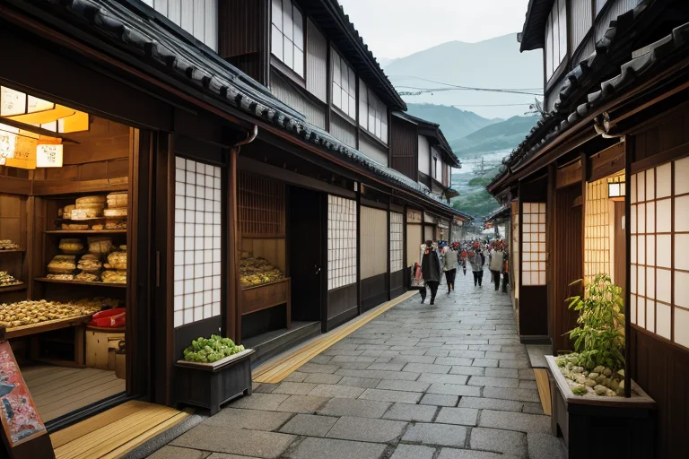
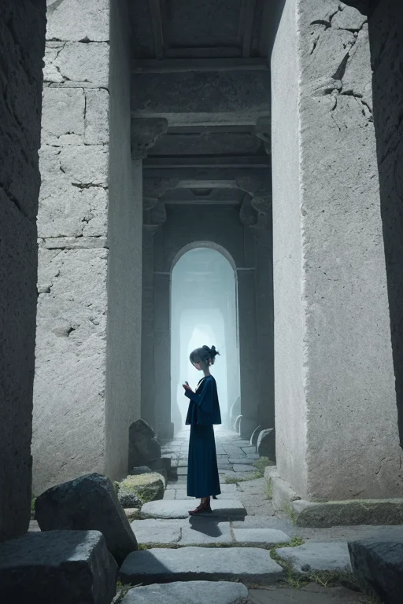
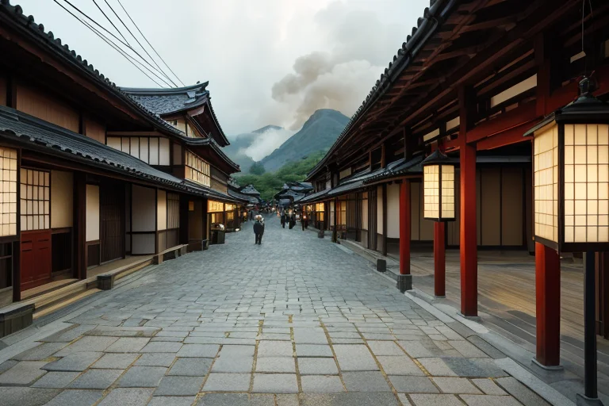
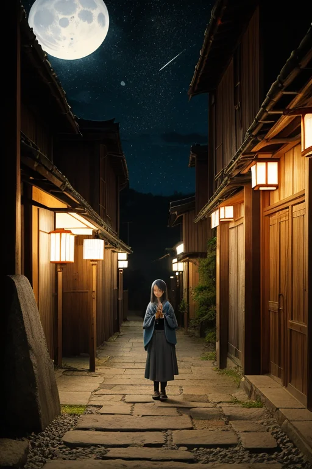
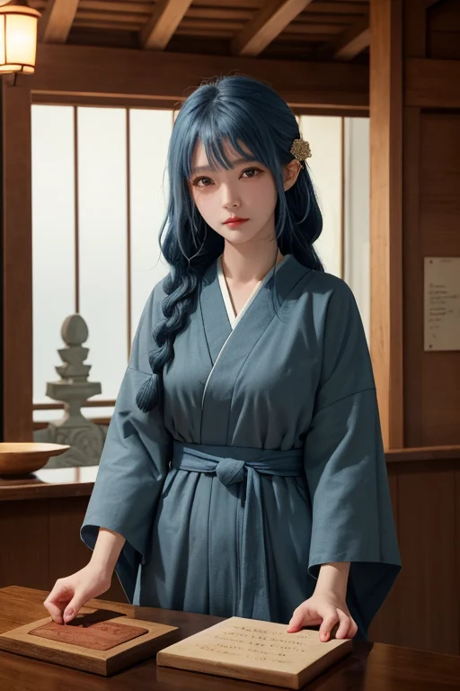

第一章 現実の岩手
あなたはまだ気づいていない。この土地にも、王がいることを。
盛場の市場は活気に満ちていた。三陸から届いたばかりの海産物、内陸の畑で採れた山菜、南部鉄器の黒い光沢。商人の掛け声、買い物客の笑い声、金のやり取りがざわめきを織りなす。花巻温泉街を訪れる観光客の流れは絶えず、わんこそばの店では椀が積まれ、時が金で測られる日常が続いていた。ここは商都線、人の欲望と活気が地脈のように流れる世界だ。
そのざわめきの底で、微かな「歪み」が脈打っていた。忘れられていく方言の断片、語り手を失った昔話の一片、開発の影で薄れる土地の記憶。それらは音もなく消え、現実の賑わいの隙間から零れ落ちようとしていた。
市場の片隅、古びた石碑の傍らで、一人の青年が静かに立ち尽くしていた。墨黒の外套を纏ったその姿は、喧噪に溶け込み、誰にも気づかれない。彼の目は、金の流れではなく、消えゆく「言葉」の流れを追っている。岩手の王、イワティア・ルーンは、この地に蓄積された無数の物語が、語られなくなることで生じる小さな亀裂を、感じ取っていた。

第二章 歪みの兆候
花巻温泉街の賑わいは、かつてないほど熱を帯びていた。新たな商業施設が建ち、観光客の流れは加速し、確かに金は回っていた。しかし、イワティアの耳には、別の音が聞こえていた。土産物屋で繰り返される画一的な説明。ガイドブックに載らない小さな伝承が、客の関心の外で息を潜める音。座敷わらしの話は観光資源として語られるが、その家々で実際に語り継がれてきた細やかな差異は、急速に失われつつあった。
彼の傍らで、石の妖精ルーンティアが微かに震えた。石碑の表面に刻まれた古い言葉が、風化ではなく「無視」によって薄れていく感触を伝えている。民話を司るイハトヴァは、遠野の里でため息をついた。語り手の高齢化、聞き手の不在。物語が「消費」される一方で、「継承」の回路が細り、土地に微かな軋みが生じ始めていた。それは物理的な地震ではない。記憶の地盤沈下。語られなくなった物語の重みが消え、その分だけ世界のバランスが、ごくわずかに傾いていく。イワティアは、その歪みがやがて現実の波紋を呼ぶことを知っていた。

第三章 王の葛藤
花巻温泉街の喧噪は、欲望の熱気に満ちていた。観光客がわんこそばを競い、土産物屋は南部鉄器を煌びやかに飾る。金の流れは活気を生み、人々の笑顔も確かだった。しかしイワティアは、その底を流れる「別の物語」の喪失を感じ取る。急ぐ客は鉄瓶の文様に込められた匠の歴史には目もくれず、座敷わらしの伝承は怪談のネタとして消費されていく。
「守るべきは、静謐な記憶の連なり。しかし、これもまた人々の営みだ」
王は呟いた。レギス・アストラの命は「歪みの調整」である。活気そのものを否定はできない。主席妖精ルーンティアが、冷たい石の面を寄せた。「語られぬ物語は、その場で消えるわけではありません。ただ、土地から『力』が抜け、軽くなる。軽すぎる大地は、別の意味で不安定です」
イワティアは深い共感に苛まれた。人々の現在の幸福と、過去から続く物語の重み。その両方を秤にかけることは、感情を覚えた王にとって苦痛だった。彼は金色堂が静かに輝いた時代の、栄華の重みとはかなさを思い出す。全てを守ることはできない。ならば、せめて消えゆく物語が最後に放つ、かすかな「歪み」の波紋を、そっと受け止めよう。彼は目を閉じ、三陸の海が運ぶ古い囁きに耳を澄ませた。

第四章 妖精との対話
遠野の夜道を、イワティアはルーンティアと歩いていた。冷たい石畳に、南部鉄器の工房から漏れる炎の揺らぎが落ちている。
「商いとは、物語の交換です」とルーンティアが静かに言った。「鉄瓶一つに、火と水と職人の年月が込められる。わんこそばの椀には、もてなす心と、食べ尽くす歓びが重なる。金は、その物語を運ぶ『言葉』に過ぎません」
イワティアは、花巻温泉街の賑わいを遠くに感じた。人々は楽しげに酒を酌み交わし、明日の商談を夢見る。その活気の底で、確かに古い物語が薄れ、新しい物語が生まれていた。
「語られなくなった物語は、消えません」とルーンティアは続けた。「土地に染み込み、歪みとなるだけです。龍泉洞の奥深くに滴る水のように、別の形で現れます。我々が守るべきは、物語そのものではなく、物語が生み出す『静謐』の均衡なのです」
王はうなずいた。商いの奔流が、過去を洗い流すのではない。ただ、物語の在り方を変えるのだ。彼はその変化の微かな軋みを、これからも調整し続けるだろう。

第五章 微調整と余韻
遠野の古い宿の帳場で、老主人が客に話していた座敷わらしの噂は、その晩、客の夢に紛れ込んだ。王はその夢の輪郭を微かに整え、怖がらせず、懐かしさだけを残した。花巻温泉街を歩く観光客の足が、ふと古びた南部鉄器の工房の前で止まる。それは王が仕組んだ偶然ではない。ただ、通り過ぎる風の向きをほんの少し変え、工房から漏れる槌の音が、ふと耳に届くようにしただけだ。
三陸海岸を走る車の窓から、一人の子供が浄土ヶ浜の奇岩を指さした。「あれ、お城みたい」。その一言が、かつてこの地を想った誰かの物語の一片を、別の形で呼び覚ました。王はそれを聞き、何も語らなかった。語られない物語は、消えない。それは土地の匂いとなり、風の音となり、人知れず受け継がれる感覚となる。歪みとは、その感覚が澱んだものに過ぎない。彼の仕事は、その澱みが災いとならぬよう、日々、微かな調整を繰り返すことだ。
金色堂の煌びやかさも、わんこそばの賑わいも、すべては流れゆくもの。彼はその流れの片隅に立ち、静謐を見守る。語守王の一日は、また静かに暮れる。
あなたの町にも、王がいる。